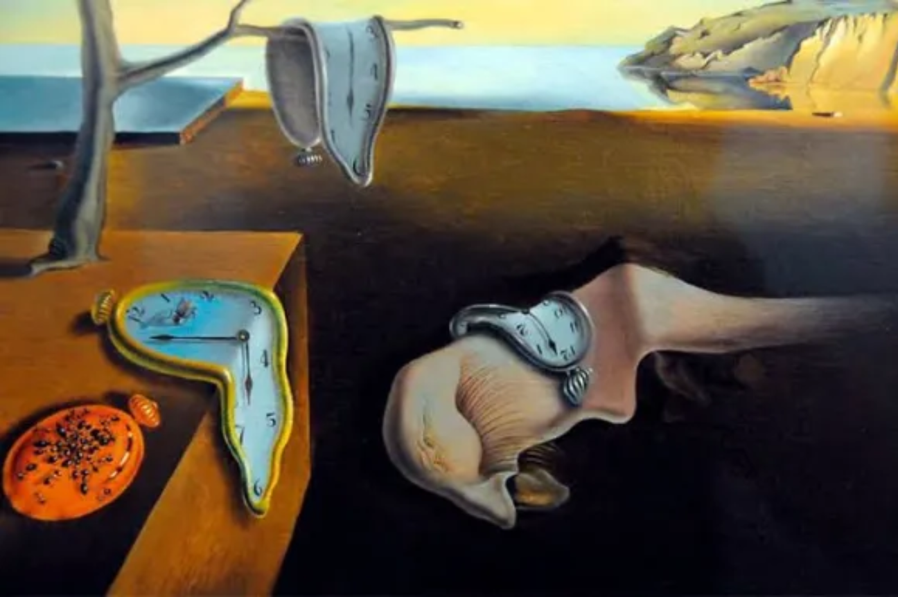

Los sismómetros captaron una señal que se repetía cada 92 segundos durante 9 días
Sección Ciencia | 26 Noviembre 2026

Un misterioso evento captado en 2023 por los sismómetros de todo el mundo ha sido finalmente explicado por la comunidad científica. La señal, que se repetía cada 92 segundos durante 9 días, provenía de un lugar remoto en Groenlandia.
Según los estudios, el deshielo de un glaciar provocó el derrumbe de una montaña, generando una onda oscilante que sacudió los detectores sísmicos de todo el planeta, un fenómeno sin precedentes por su duración y alcance.
El Papa León XIV llega a Perú en visita histórica
Redacción Cultura | 26 Noviembre 2026

En un acontecimiento sin precedentes para la región, el Sumo Pontífice León XIV arribó a tierras peruanas, siendo recibido por miles de fieles en una ceremonia multitudinaria. La visita tiene como objetivo principal llevar un mensaje de esperanza y unidad.
Durante su estadía, el Papa tiene programado visitar varias ciudades del país, incluyendo un recorrido por el norte, donde se espera que se reúna con comunidades vulnerables y líderes locales para abordar temas de justicia social.